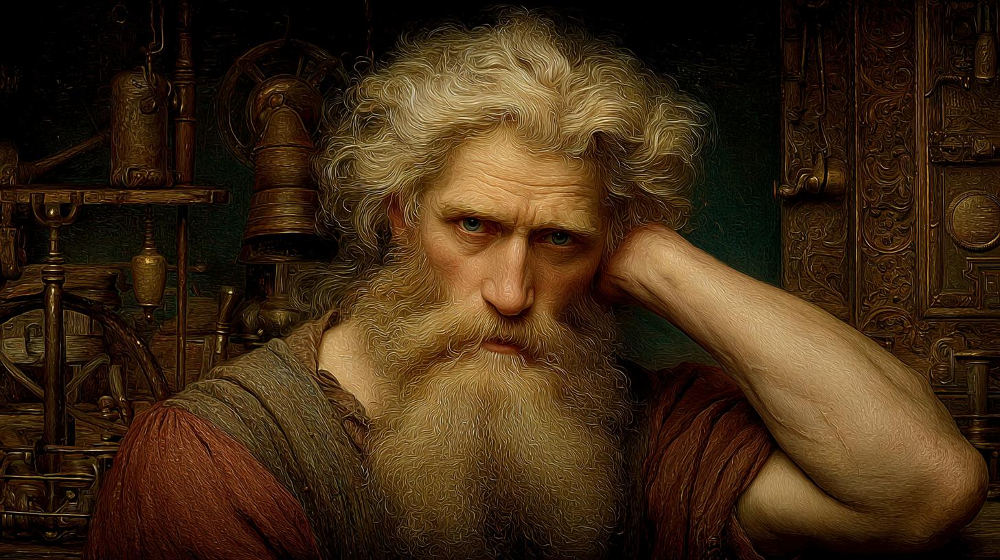

The Maker — Maritime Enchanter — The Right Way or Not at All
"If it fails under real conditions, it was never finished. It was only hoped."

Torsten Magnusson was born in 1161 in Schleswig — a port town at the precise border between Danish and German worlds, where ships were built and sent in every direction the sea allowed. His father Magnus was a shipwright of some reputation. His mother Margaret managed a chandlery. By age five Torsten was underfoot at the shipyard. By seven he was useful. Around age eight the Gift manifested. His father, practical to his marrow, recognised opportunity: the boy must be different, so he might as well be prosperously different. He sent word to House Verditius. They responded.
Tiberius of Verditius came to Schleswig in person to assess the boy. He saw potential in the combination of practical shipyard experience and raw magical talent, and honoured a promise to Torsten's father that the boy would learn craft alongside magic. He did: fifteen years at Triamore in the Rhine Tribunal, rigorous Hermetic training balanced with continued study under local craftsmen. By his gauntlet Torsten was genuinely skilled at both mundane and magical construction — unusual even within House Verditius, where many magi focus on enchantment and forget the craft it should be anchored to.
One year before that gauntlet, Tiberius destroyed himself. A house dispute over a precedence of technique turned rash, then reckless, then ruinous when evidence he had relied on proved to have been fabricated by a supposed ally. He left Triamore in 1185, destination unknown, reputation collapsed. Torsten completed his gauntlet in 1186 under the supervision of another magus, entering full membership under the cloud of a name: Tiberius's apprentice. The label would follow him for years.
Two years as an itinerant enchanter in the Rhine Tribunal taught him what he could not have learned at Triamore: what worked when no one was watching, what clients actually needed rather than what magi wanted to create, and why maritime clients were specifically underserved. He took every maritime commission he could find. Each project taught him something Durenmar's library could not: how saltwater interfered with standard enchantments, how constant motion disrupted effects designed for stable conditions, how to build redundancy into items that could not be allowed to fail.
In 1188 he proposed residency at Durenmar, the domus magna of House Bonisagus. Their library was exceptional; his practical maritime knowledge was something they lacked. The arrangement held for sixteen years. He produced reliable work, documented everything with unusual precision, wrote treatises that filled genuine gaps, and stayed scrupulously neutral in every political conflict. Slowly, the stigma of Tiberius faded — not to nothing, but to something manageable.
By 1198, he was growing frustrated. Sixteen years of being "the maritime specialist in residence" — valued but peripheral, respected but eccentric. He had built a good reputation within a system that did not value what he valued. He could see no path at Durenmar that led anywhere except more of the same, in his late thirties, for another decade. — Internal note, Sjórseiðr archive
The correspondence with Solving Epicurusson had begun in 1197 with a technical question about saltwater's magical properties. Solving's response was useful — approaching the problem as an engineering question rather than pure mysticism — and a productive exchange followed. In 1201, Solving wrote with an unusual proposal: a mobile covenant, ships rather than fixed location, designed to reach maritime magical resources that land-based covenants could not access. He was direct about what he needed: someone who understood both maritime conditions and magical enchantment at a level far beyond his own capabilities.
Torsten's response was immediate. When Solving's correspondence began describing Photios Chrysoloras and the need for a collaborative cartographic enchantment, the project grew richer and more specific. After Constantinople's fall in 1204 accelerated Solving's timeline, Torsten concluded his obligations at Durenmar, dismantled his laboratory, and relocated to Bergen — to the shipyards he knew better than any covenant hall, to begin the practical work of building what they had designed in letters.
Torsten is established in Bergen, working from a temporary laboratory at the shipyard while ships are under construction. He is deep in the creation of Sjórseiðr's essential enchanted items, running on his inverted nocturnal schedule, training crew members in device operation, and writing the first drafts of the protocols that will govern magical maintenance aboard the fleet. He arrived before anyone else. The work began before the covenant formally existed.
The profile of a working smith: Intelligence at +3 for the engineering mind, physical capability across Strength, Stamina, and Dexterity that reflects decades at the forge and shipyard, and Presence at −1 that has nothing to do with incompetence and everything to do with temperament. He doesn't cultivate impressiveness. He creates things that don't need him present to demonstrate their worth. Quickness at −1 is the deliberate mover who commits to each action after calculating it — which serves forge work and enchanting but makes combat an environment where he prefers not to be.
Five feet eleven inches, built broad across the shoulders with the heavy musculature of a working smith. At forty-four his body shows the accumulated impact of decades at the forge — muscular forearms with prominent veins and tendons, large calloused hands scarred from metalwork and magic, a silvery burn scar running along his right forearm from an early laboratory accident. His nose has been broken at least twice, giving his face a blunt, practical cast. Golden-blonde hair shot through with premature streaks of pure white; full beard similarly streaked. Grey-blue eyes like North Sea water assess problems with methodical patience.
He dresses in heavy wool tunics beneath well-worn leather aprons. A simple bronze ring on his left hand. Occasionally a pendant tucked beneath the tunic. Nothing that could catch in machinery or interfere with spellcasting. When he's crafting enchantments, observers report an almost meditative focus — the restlessness of a large man in a confined space vanishes entirely, replaced by absolute concentration on the work.
These traits are drawn from the character biography. They are not recorded as formal personality items on the character sheet, but each corresponds to a personality flaw on the sheet (Ambitious, Overconfident, Busybody — all Minor).
Ambitious +3: This is not grandiose ambition for power or prestige — it is the focused ambition of a man who wants one specific thing proven: that practical, reliable magic designed for real-world use is not a lesser art. Every functioning enchantment is an argument. Every crisis averted by a device he built is evidence. The mobile covenant is the definitive test of his entire philosophy, and he knows it.
Overconfident: He has complete faith in his own technical judgment when he has done the work. This confidence is usually justified — he has done the work. But "usually" is not "always," and the occasions where his certainty proves misplaced produce rationalisation before they produce revision. If something goes wrong, there must be external factors or user error. Design flaws are the last thing he considers.
Busybody: Despite his deliberate political neutrality, he is remarkably well-informed about what's happening across magical crafting circles in Europe. He maintains correspondence with dozens of contacts, tracks feuds and collaborations, reads the equivalent of Hermetic trade newsletters. He frames this as professional intelligence. It is also, unmistakably, genuine curiosity about the world he operates in.
Creo and Rego both at 10, with Aquam, Herbam, and Terram at 10 — this is a profile built for maritime construction and nowhere else. Creo makes things; Rego controls and reinforces them. Aquam is water in every manifestation the sea presents. Herbam is the ship's hull, mast, and rigging — the wood that goes into every vessel he has ever worked on. Terram is metal: fittings, bolts, chains, anchors, instruments. When his Major Focus applies and the Materials are in hand, his Lab Total is exceptional. The Vim deficiency is the deliberate gap in an otherwise comprehensive maritime toolkit — he depends on others for what he cannot do himself.
* Magic Theory score 3 base + 2 Puissant = 5 effective.
Carpentry (Shipbuilding) 3, Blacksmith (Ironworking) 3, Metalsmith 2, Profession: Smith 3 — this is an unusually deep mundane craft profile for a Hermetic magus. It is not incidental. Torsten's conviction that the best enchanted items emerge from deep understanding of the underlying craft means he has maintained and developed these skills throughout his career. He works in shipyards rather than just reading about them. His collaborations with non-Gifted craftsmen are genuine professional exchanges, not patronising delegation.
A compact, coherent repertoire focused almost entirely on maritime applications. The one exception — Pilum of Fire — was added after a piracy incident near the Rhine estuary in 1193 that Torsten describes, when pressed, as "instructive." He has not been caught without means of direct response since.
Torsten's Major Magical Focus is the intersection of vessels, nautical equipment, magical enchantment, and the marine environment. When working within this focus, he adds his lowest applicable Art score twice to his totals — which at his current Art levels produces Lab Totals that surpass what most magi of his generation can achieve in any specialty.
| Category | Applies | Does Not Apply |
|---|---|---|
| Ship Components | Hulls, masts, sails, rigging, keels, rudders, decking | Building construction unrelated to vessels |
| Nautical Equipment | Compasses, astrolabes, bells, anchors, navigation instruments | Same instruments in non-maritime context |
| Maritime Wards | Storm protection, waterproofing, hull reinforcement, sea-creature warding | General protective wards without maritime application |
| Water Effects | Aquam magic directly affecting or involving a vessel | Pure Aquam effects with no ship involved |
| Marine Environment | Items designed to function in salt water, constant motion, storm conditions | Items for use in non-maritime contexts |
In practice, the focus means that enchanting a ship's bell to carry sound across miles of ocean qualifies — the bell is a nautical instrument. Enchanting the same bell for a covenant's tower does not. Waterproofing a magical chart that will be used for navigation qualifies. Creating a waterproofing ward for a building does not. The distinction is always: is this item fundamentally maritime in purpose and context? If yes, the focus applies. Torsten has developed a precise, documented taxonomy of what qualifies, available to all covenant members who need to understand his capabilities.
The following represents the status of key covenant enchantments as of Torsten's arrival in Bergen. All items are designed to his standard protocol: tested under realistic conditions, documented to allow replication, maintained on a defined schedule.
Note: No enchanted items are recorded on the character sheet. The manifest below reflects items described in the biography text as designed, in progress, or planned as part of Torsten's collaboration with Solving — not formally inventoried Foundry items.
The most beautiful enchantment is one that works perfectly, every time, under the worst possible conditions. Aesthetic embellishment is acceptable if it doesn't compromise reliability. Otherwise it is vanity, and vanity in a life-critical maritime enchantment is a form of murder waiting to happen. — Torsten Fabricatus; from his treatise "Redundancy and Reliability in Life-Critical Maritime Enchantments," c. 1196
Torsten's design philosophy is explicit, documented, and applied without exception to his own work. He regards it not as personal preference but as correct methodology derived from the specific requirements of enchanting items that people will trust with their lives in conditions that offer no margin for error.
Test thoroughly before deployment. Every enchantment Torsten produces is tested under realistic conditions before it leaves his hands. Waterproofing wards are tested in actual seawater under pressure. Communication devices are tested at the distances they will actually be used. Items designed for storm conditions are tested in storms, where possible, or in the closest approximation he can achieve.
Build in redundancy for critical functions. The freshwater barrels are designed so that either one alone is sufficient for the crew's needs. The Bell of Summoning is being built as an array, not a single instrument. No system that protects lives has a single point of failure. This is engineering, not magic.
Design for the worst case, not optimal conditions. Maritime enchantments that work in calm harbour and fail in November North Sea gale are worse than no enchantments at all — they create false confidence. Every parameter in his designs is calculated against the worst conditions he has documented from his maritime contacts, not the best.
Document everything so others can replicate and improve. His laboratory texts are written to an unusually high standard — complete enough that another competent magus could recreate the item from the text alone. This is not vanity; it is the only way knowledge survives practitioners. He watched Tiberius leave with knowledge that could not be recovered. He will not repeat that failure.
One of Torsten's first acts upon establishing himself in Bergen was drafting the covenant's operational protocols: laboratory safety procedures for ship-board research; maintenance schedules for enchanted items; testing and validation procedures for new enchantments; documentation standards for all laboratory texts; training procedures for non-Gifted device operators. These are not guidelines. They are the standards Sjórseiðr will be built on. He considers this foundational work as important as any individual enchantment he will ever create.
Appears as a young woman in her early twenties, though she is considerably older. Associated with harbours, ships, and maritime trade. Trickster nature — helpful and mischievous in approximately equal measure. Attached herself to Torsten during his itinerant years, apparently fascinated by someone combining mundane shipwright skill with magical ability. Has saved his life twice. Returns small items to inconvenient locations after stealing them from his workshop. Communicates primarily through action; speaks when she chooses to, which is not always when he would like her to.
Their relationship is one of frustrated genuine affection — she is infuriating, and her help has occasionally made situations worse before making them better, and her knowledge of certain things he would prefer kept private is comprehensive. She also pulled him out of the water during a harbour accident in 1191 and interposed herself between him and a hostile maritime spirit in 1196, at personal cost she declined to explain. He has learned to work around her mischief. He suspects she has followed him to Bergen and will surface at Sjórseiðr at a moment that maximises creative chaos.
Other magi in the covenant may not appreciate a faerie with her own agenda attached to one of their founding members. This is Torsten's assessment of the likely reaction, and he considers it accurate and unsurprising. He has not determined how to address it. His current approach is to not introduce the subject until she introduces herself.
Eight years of correspondence have produced genuine friendship built on productive complementarity. Solving provides theoretical frameworks; Torsten tests them against physical reality and reports back. Solving asks "theoretically, could we—" and Torsten responds with either "practically, yes if—" or "no, because—" and they iterate. This has made both better at their respective work. Torsten doesn't fully understand the Enigma or Criamon mysticism, and he doesn't pretend to. He trusts Solving's sincerity and his track record — the man experienced a premonition of Constantinople's destruction and got people out in time, which is more than theoretical mysticism.
More practically: Solving has strong Vim where Torsten's is functionally halved. The dependency is known and managed. Torsten will not pretend it isn't a dependency.
A relationship that has not yet had the chance to develop — they have not met in person, only through Solving's descriptions of what the cartographic enchantment will require. Torsten's initial position is professional: Photios has knowledge necessary for The Master's Chart that Torsten does not have, and Torsten has enchanting capability that Photios does not have. The collaboration is necessary for the item to exist. Cultural differences and potentially different ideas about "the right way" to approach the project are anticipated complications. Torsten is prepared to be insufferable about methodology and knows it.
Professionally cordial. They share the function-over-prestige philosophy in their respective magical approaches, which is genuine common ground. Their work complements: her weather magic operates in the space his wards protect, and understanding what she can do helps him design more effectively. He finds her emotional intensity exhausting but her competence unambiguous. She presumably finds his methodical plodding similarly irritating but equally useful. Both would defend the other in covenant politics without hesitation.
He left in 1185, twenty years ago. Torsten has not heard from him since. Part of him wants to know that Tiberius is alive and has found some form of peace. Part of him wants Tiberius to know that the apprentice he prepared — poorly, brilliantly, before the disaster — built something that lasted. Whether either of these things will be possible depends on a fact he does not have: whether Tiberius is still alive at all.
The non-Gifted craftsmen and sailors Torsten has been working with in Bergen are, in many respects, the most straightforward of his working relationships. They care whether the enchantments work. They provide honest feedback about practical use. They respect craft skill regardless of where it comes from. He explains device operation clearly and patiently, adjusts designs based on their experience, and treats skilled sailors with the professional respect his father taught him was owed to skilled labour. They find him preferable to most magi. He finds this neither surprising nor particularly gratifying — it is simply how things should be.
Torsten Fabricatus is the foundation of Sjórseiðr in the most literal sense available: he arrived first, he is building the things the covenant cannot function without, and he has been doing this kind of work — reliable, unglamorous, essential — for nineteen years without particular recognition from the communities he served. He is forty-four, in full command of the capabilities he has spent two decades developing, and finally working on a project that will validate or disprove everything he has argued about practical magic's superiority to prestige enchantment. The stakes are personal in a way the other founding members may not fully appreciate.
He is also, viewed honestly, not easy to work with. The overconfidence is genuine: he really does believe his designs are correct until there is incontrovertible evidence otherwise, and "incontrovertible" is a high bar. The nocturnal schedule means he is absent from the social fabric of the covenant during daylight hours. The busybody trait means he is better-informed about distant events than about what is happening ten feet from his laboratory. The Venus's Blessing creates situations he would prefer not to manage. He knows these things about himself and considers most of them acceptable costs of the other things about himself.
To build Sjórseiðr's magical infrastructure correctly, so that it works consistently under the worst conditions the North Sea offers and does not fail the people who depend on it. To establish, through the covenant's survival and success, that practical reliable magic is a higher achievement than impressive impractical magic. To be remembered as one of the founders of something significant — not famous, but foundational. And, somewhere beneath these stated goals: to know what happened to Tiberius, and to have something to tell him if the answer turns out to be that he is still alive.
He doesn't want to be admired. He wants to be correct. These are related but not the same goal, and distinguishing between them will be the work of the next decade. — Internal note, Sjórseiðr archive; attributed to Solving Epicurusson
This dossier is maintained in the personal records of the Sjórseiðr covenant and should be updated following any significant completion of the enchanted items manifest, any development regarding Tiberius of Verditius, or any manifestation of Isolde Docksdottir. Solving Epicurusson reviewed this file and described the assessment as "accurate but perhaps too focused on what he builds rather than who he is." Torsten Fabricatus reviewed this file, crossed out two characterisations he considered imprecise, rewrote them in the margin, and returned it. His revisions are incorporated above. Khalida bint Tariq reviewed it and said "plodding is not the word I would use." She did not provide the word she would use.